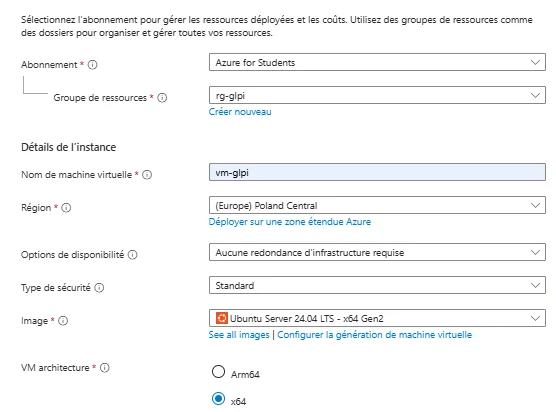
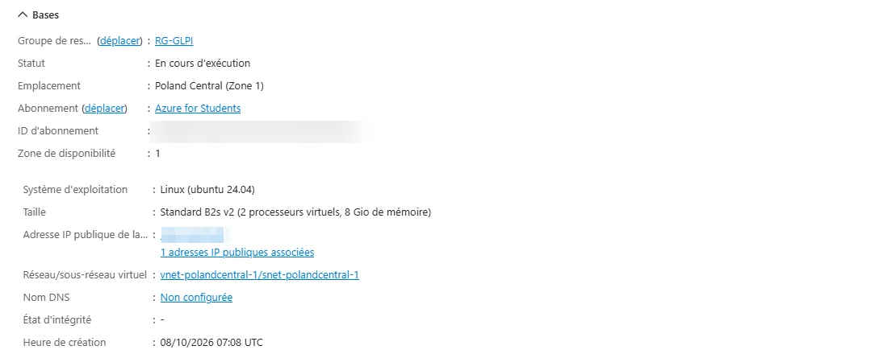
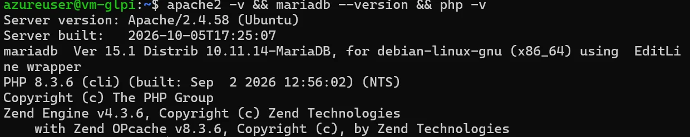
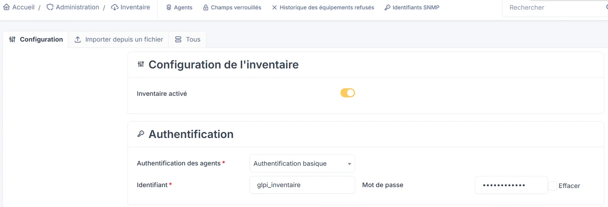
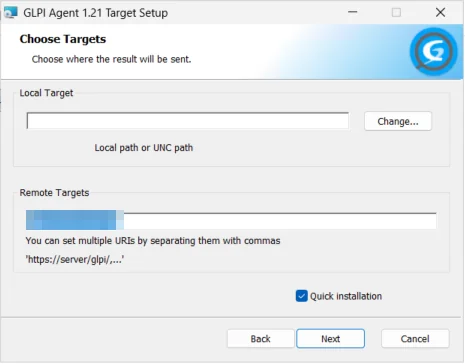
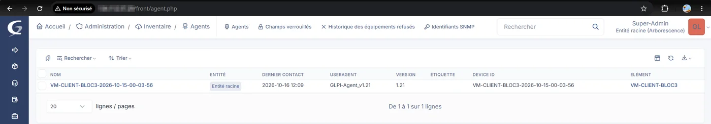
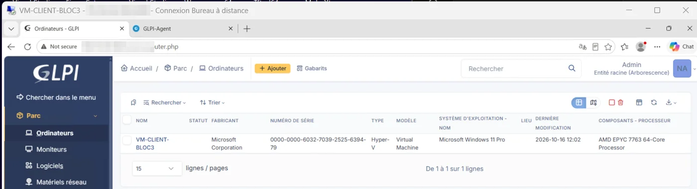
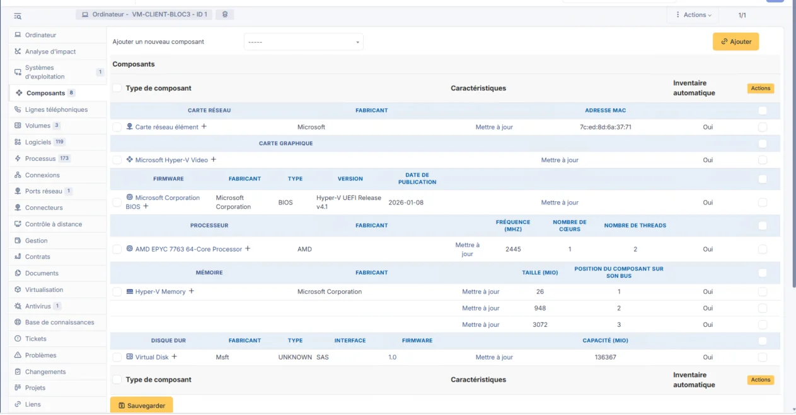

01Contexte et rôle
La Région Normandie souhaite un serveur GLPI pour suivre les demandes d'intervention de ses lycées. La mission consistait à l'installer sur Microsoft Azure, puis à vérifier que l'inventaire d'un poste client Windows remonte automatiquement dans GLPI.
Le sujet prévoyait le plugin FusionInventory, mais il n'est plus compatible depuis GLPI 10 : l'inventaire est désormais intégré à GLPI, et l'agent FusionInventory a été remplacé par GLPI Agent.
J'ai pris en charge le serveur : création de la machine virtuelle, installation et sécurisation de GLPI, activation de l'inventaire. Mon binôme s'est occupé de la machine virtuelle Windows et de la vérification de l'inventaire. Nous avons rédigé ensemble la procédure d'installation et de configuration.
02Machine virtuelle sur Azure
Dans le portail Azure, un groupe de ressources rg-glpi regroupe tout ce qui concerne le serveur. La machine virtuelle vm-glpi y est créée :
| Paramètre | Valeur |
|---|---|
| Image | Ubuntu Server 24.04 LTS (x64) |
| Taille | Standard_B2s_v2 : 2 vCPU, 8 Go de RAM, disque de 30 Go |
| Région | Poland Central |
| Authentification | Clé SSH, utilisateur azureuser |
| Ports entrants | 22 (SSH), 80 (HTTP), 443 (HTTPS) |
| Adresses | IP privée 172.16.0.4, IP publique statique |


L'adresse IP publique est passée en statique : elle ne change plus au redémarrage, ce qui compte car les agents d'inventaire l'utilisent pour joindre le serveur.


La connexion se fait en SSH avec la clé privée téléchargée lors du déploiement, puis le système est mis à jour :
ssh -i vm-glpi_key.pem azureuser@<IP publique>
sudo apt update && sudo apt upgrade -y
sudo reboot03Installation de GLPI
GLPI a besoin d'un serveur web, d'une base de données et de PHP. Nous installons Apache, MariaDB et les modules PHP demandés par GLPI :
sudo apt install -y apache2 mariadb-server php php-mysql php-curl php-gd \
php-intl php-mbstring php-xml php-zip php-bz2 php-ldap php-apcu \
php-cli php-bcmath php-opcache libapache2-mod-php

Après mysql_secure_installation (mot de passe root, suppression des comptes anonymes et de la base de test, pas de connexion root à distance), nous créons une base et un utilisateur réservés à GLPI (mot de passe masqué) :
CREATE DATABASE glpi CHARACTER SET utf8mb4 COLLATE utf8mb4_unicode_ci;
CREATE USER 'glpi_user'@'localhost' IDENTIFIED BY '********';
GRANT ALL PRIVILEGES ON glpi.* TO 'glpi_user'@'localhost';
FLUSH PRIVILEGES;L'archive de GLPI 12.0.0 est extraite dans /var/www/glpi, puis confiée à l'utilisateur d'Apache, www-data. Le site Apache pointe vers le dossier public de GLPI, comme le recommande sa documentation, pour que les fichiers internes ne soient pas accessibles depuis le web :
<VirtualHost *:80>
DocumentRoot /var/www/glpi/public
<Directory /var/www/glpi/public>
Require all granted
RewriteEngine On
RewriteCond %{REQUEST_FILENAME} !-f
RewriteRule ^(.*)$ index.php [QSA,L]
</Directory>
</VirtualHost>sudo a2enmod rewrite
sudo a2dissite 000-default
sudo a2ensite glpi
sudo systemctl restart apache2L'assistant d'installation, dans le navigateur, vérifie les prérequis (tous validés), se connecte à la base glpi avec glpi_user et crée les tables.
04Sécurisation et inventaire
- Mot de passe du compte administrateur glpi changé.
- Comptes par défaut post-only, tech et normal supprimés.
- Fichier install/install.php supprimé, pour qu'on ne puisse pas relancer l'installation.
- Un compte administrateur nominatif créé pour mon binôme.
Dans Administration > Inventaire, l'inventaire est activé avec une authentification basique : un agent qui n'a pas l'identifiant glpi_inventaire et son mot de passe ne peut pas envoyer d'inventaire.


05Poste client et GLPI Agent
Le poste client est une machine virtuelle Windows 11 Pro (taille Standard_B2als_v2, port RDP ouvert), à laquelle on se connecte en bureau à distance. GLPI Agent 1.21 y est installé, avec l'adresse du serveur dans Remote Targets. L'agent tourne ensuite comme un service Windows.


L'installation rapide ne demande pas les identifiants de l'agent. Nous les ajoutons dans le registre en PowerShell (administrateur), puis nous redémarrons le service :
Set-ItemProperty -Path "HKLM:\SOFTWARE\GLPI-Agent" -Name user -Value "glpi_inventaire"
Set-ItemProperty -Path "HKLM:\SOFTWARE\GLPI-Agent" -Name password -Value "********"
Restart-Service -DisplayName "GLPI Agent"La page locale de l'agent (http://127.0.0.1:62354) permet ensuite de forcer un inventaire immédiat avec Force an inventory.
06Vérification
L'agent apparaît dans Administration > Inventaire > Agents, et le poste a été créé automatiquement dans Parc > Ordinateurs.




| Point de contrôle | Résultat |
|---|---|
| Agent visible dans GLPI | Oui, VM-CLIENT-BLOC3, GLPI Agent 1.21 |
| Poste présent dans le parc | Oui, sous Windows 11 Pro |
| Composants renseignés | Oui : processeur AMD EPYC 7763, environ 4 Go de RAM, disque de 136 Go, carte réseau |
| Logiciels remontés | Oui, 119 logiciels |
| Date du dernier inventaire | 16/10/2026, 14 h 02 (heure française) |


07Difficultés et bilan
Les principales difficultés venaient des limites de l'abonnement Azure for Students :
- plusieurs tailles de VM indisponibles en France Central, et la région Austria East refusée par une stratégie de l'abonnement : nous sommes passés en Poland Central ;
- une taille sans aucun quota : la commande az vm list-usage --location polandcentral -o table a montré que la série B en avait ;
- une connexion SSH refusée, faute du bon nom d'utilisateur (azureuser) ;
- un poste qui n'apparaissait pas dans GLPI : les logs d'Apache montraient une erreur 401, car l'agent n'avait pas les identifiants de l'authentification basique. Les ajouter dans le registre a réglé le problème.
Avant une mise en production, il faudrait :
- passer GLPI en HTTPS avec un certificat, car les mots de passe et les inventaires circulent aujourd'hui en clair ;
- réserver SSH et RDP aux adresses des administrateurs, et l'accès à GLPI aux adresses des lycées ;
- utiliser des comptes nominatifs, ou une connexion à l'Active Directory ;
- sauvegarder la base et les fichiers de GLPI, et appliquer les mises à jour régulièrement.